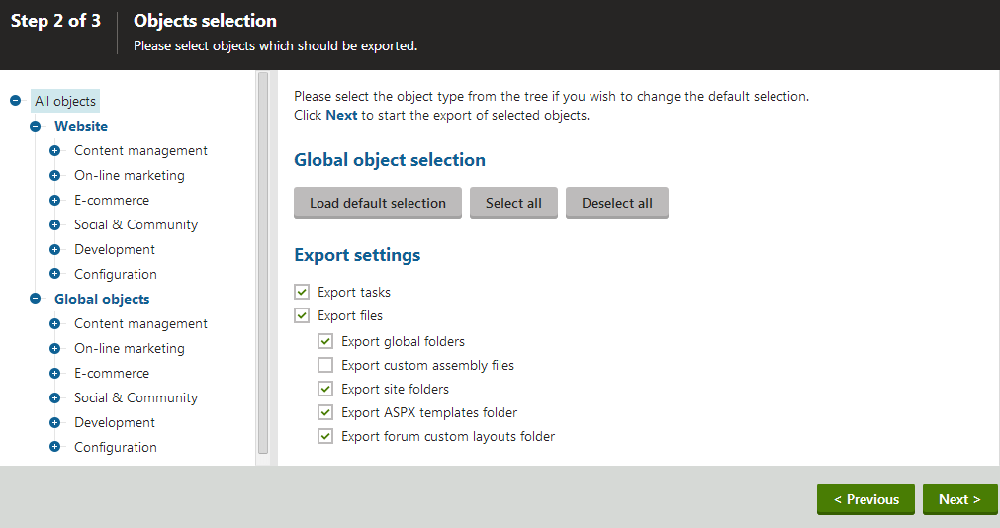

Exporting sites
The system allows you to export entire websites, including settings and related objects (such as page types, workflows, web parts, page templates, etc.), into a single file archive. You can then import the archive on other Kentico instances (of the same version or up to one major version newer).
Exporting a site
Open the Sites application.
Click Export site ( ) for the site you want to export. The Export wizard starts.
Fill in the name of the export package and choose the object pre-selection type:
Option
Description
File name
Sets the name of the export package. The wizard creates a zip file containing the export data in the ~/CMSSiteUtils/Export folder.
Preselect all objects
Preselects all objects related to the site.
Preselect objects changed after specific date
Preselects all objects changed after the specified date.
Use previous export settings
Preselects objects based on the settings of a previous export.
Tip: To clear the history of previous exports, open the Sites applications, click View export history among the header actions and delete the items on the History tab. Deleting export history items does not remove the corresponding packages from the file system.
Select an option and click Next.
Select which objects you want to export. The tree separates objects into categories according to the related functionality. These reflect the product categories to which the objects are related. The Website category contains objects related to the selected website. The Global objects category contains global objects that can be used by all sites. Selecting a category opens a set of check boxes in the right part of the screen, allowing you to select which objects will be exported.
Note: The Pages of a website may require other objects to work correctly (for example the Page types of the site's pages or shared Page templates). To ensure that the exported pages can be successfully imported, you need to include the required objects into the package.
See the Export - Object selection settings section for details.

Selecting objects for exportAfter making all required selections, click Next to proceed. A log appears, showing you the export progress. You can abort the export by clicking Cancel at any time. When the export finishes, a message appears above the log, showing the file system path to the exported file along with a download link.
(Optional) Click the download link at the top of the the log if you wish to immediately download the export package.
Click Finish.
The system returns you to the Sites application. You can now copy the exported package into the ~/CMSSiteUtils/Import folder of the target installation of Kentico, and use the Import site or objects wizard described in Importing a site or objects.
Export - Object selection settings
The following options are available in the Object selection step of the Export wizard.
Select the root of the tree (All objects) to access the following general export settings:
|
Global selection |
|
|
Load default selection |
Preselects all objects based on your selection in Step 1 of the export wizard. |
|
Select all objects |
Selects all available objects. |
|
Deselect all objects |
Unselects all objects. |
|
Export settings |
|
|
Export tasks |
If enabled, delete tasks (incremental deployment) will be included in the package. |
|
Export files |
Some database objects are linked with physical files stored on the file system inside the web project. If you select this option, such files will be exported along with the corresponding database objects. |
|
Export global folders |
If enabled, all files under the following folders will be added to the export package:
|
|
Export custom assembly files |
If enabled, custom assembly files (dlls) that store the classes of certain custom objects will be exported together with the given objects. Applies to notification gateways, translation services, payment options, integration connectors, scheduled tasks, advanced workflow actions, marketing automation actions and smart search analyzers. The system considers assemblies as custom if their name does not start with the CMS. prefix. |
|
Export site folders |
This option is only available when exporting websites, not just separate objects. If enabled, all files under the following site-related folders will be added to the export package:
|
|
Export ASPX templates folder |
If enabled, the folder with ASPX page templates will be exported:
|
|
Export forum custom layouts folder |
If enabled, the folder with custom forum layouts will be exported:
|
The following categories contain extra options to be set:
|
Custom tables |
|
|
Export custom table data |
If selected, custom table records (the actual data stored in the tables) will be exported along with the selected custom tables. |
|
Pages |
|
|
Export pages |
If selected, pages will be exported. |
|
Export page histories |
If selected, histories of all exported pages will be exported. |
|
Export page relationships |
If selected, relationships of all exported pages will be exported. |
|
Export page level permissions |
If selected, page security settings made in the Pages application will be exported. |
|
Export blog comments |
If selected, blog comments will be exported. |
|
Export event attendees |
If selected, event attendees will be exported for all exported events. |
|
Forms |
|
|
Export forms data |
If selected, stored forms data will be exported together with the exported forms. |
|
Export physical files |
If selected, physical files saved within form records (if there are some) will also be imported. |
|
Forums |
|
|
Export forum posts |
If selected, forum posts will be exported together with the exported forums. |
|
Groups |
|
|
Export media files |
If selected, group media files stored in the database will be exported. |
|
Export physical files |
If selected, files in group media libraries that are stored in the file system will be exported. This option is not selected by default as it may result in extremely large export packages. Instead, it is recommended to transfer these physical files manually. |
|
Message boards |
|
|
Export board messages |
If selected, board messages will be exported together with particular message boards. |
|
Media libraries |
|
|
Export media files |
If selected, media files stored in the database will be exported. |
|
Export physical files |
If selected, physical media files stored in the file system will be exported. This option is not selected by default as it may result in extremely large export packages. Instead, it is recommended to transfer these physical files manually. |
|
Modules |
|
|
Seal the selected modules |
If selected, the system seals the exported modules. When the modules are imported to another instance of Kentico, they will not be in development mode (i.e. it is not possible to edit the module's properties, or create new classes, UI elements, permissions and settings). You cannot export a module again from instances where it is sealed. |
If you have the Log export tasks setting enabled in Settings -> Versioning & Synchronization -> Staging, a list of object deletion tasks may be displayed at the bottom of the list. If you leave the boxes selected, the objects will be deleted after you import the package on the target server.